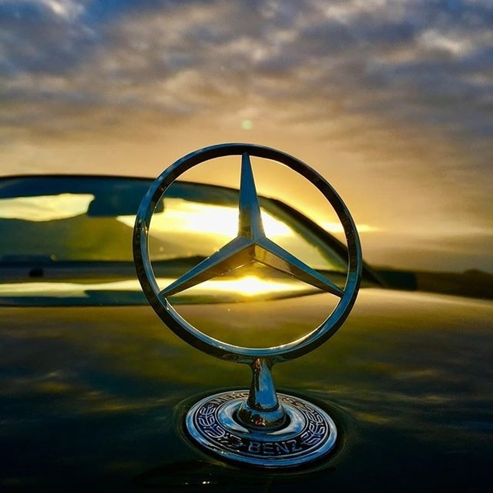
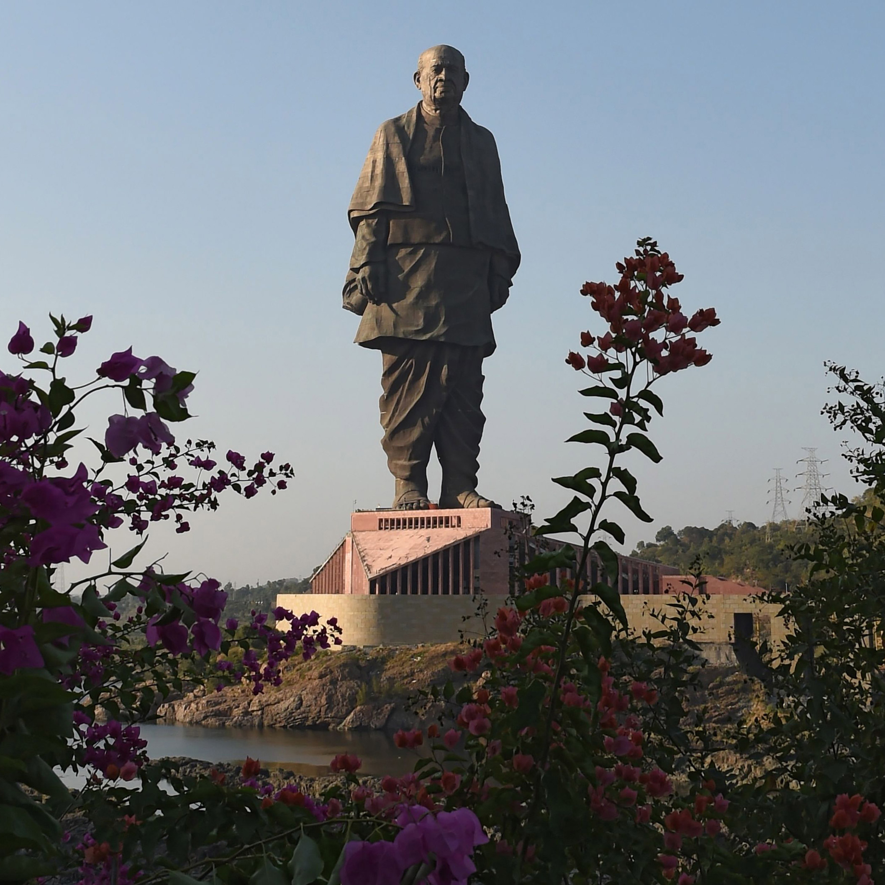
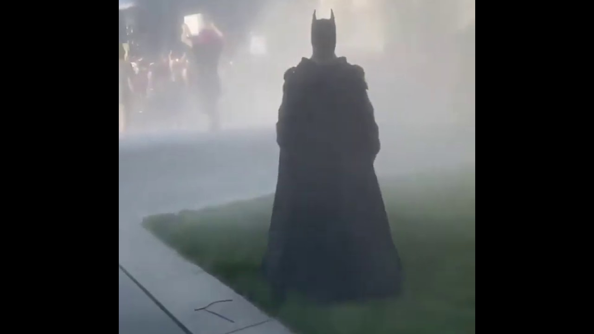

"It Will Be an Entirely New Thing": Zack Snyder's $20M-Plus 'Justice League' Cut Plans Revealed

Reference Wikipedia,Google
HBO Max will debut the project in 2021 — possibly in a four-hour director's cut or in six TV-style "chapters" — as the helmer gets the gang back together with the original postproduction crew to score, cut and finish visual effects. It was very early on a Monday morning in November when director Zack Snyder and his wife and producing partner, Deborah Snyder, received a call from their agent. Let’s be a bit more precise: It was 7 a.m. But more importantly, it was the day after the second anniversary of the release of Justice League, the DC superhero movie that Snyder was forced to exit due to a family emergency, which was then substantially reshot and retooled by replacement director Joss Whedon.
In the time since its release, something unusual happened: A growing movement of fans, rallied by the hashtag #ReleasetheSnyderCut, had called, agitated, petitioned — even bought a Times Square billboard and chartered a plane to fly a banner over Comic-Con — for Snyder’s version to be released. And on the film's second anniversary, the hashtag had its biggest day ever — with even the movie's stars Gal Gadot and Ben Affleck adding their voices on Twitter.
Continued on page 3
World's first car company
 To know the origin of the Mercedes-Benz logo, it’s important to first know the history of Mercedes-Benz. It all started with two engineers/entrepreneurs: Gottlieb Daimler and Karl Benz.Continued on page 2
Tallest Statue in East of India
 The statue depicts Sardar Vallabhbhai Patel, who together with Mohandas Gandhi and Jawaharlal Nehru helped lead India to independence from the U.K. Often known as the Iron Man of India.Continued on page 4
World's best diet plan
Mediterranean generally accepted that the folks in countries bordering the Mediterranean Sea live longer and suffer less than most Americans from cancer and cardiovascular ailments.Continued on page 2
Batman and Joker turn up in Riots
 An unidentified man, dressed up as Batman showed up at one of the Philadelphia protests, walking out of a cloud smoke as seen in Christopher Nolan's epic "The Dark Knight Rises"Continued on page 2
ELECTRIC CARS: THE FUTURE OF TRANSPORTATION

An electric car is an automobile that is propelled by one or more electric motors, using energy stored in rechargeable batteries. The first practical electric cars were produced in the 1880s.[1] Electric cars were popular in the late 19th century and early 20th century, until advances in internal combustion engines, electric starters in particular, and mass production of cheaper petrol (gasoline) and diesel vehicles led to a decline in the use of electric drive vehicles.
Continued on page 3

A CHINESE COMPANY TO BUILD A FAKE MOOON TO REPLACE THE CITY
Reference Wikipedia,GoogleA Chinese company has announced ambitious plans to put a "fake moon" into space to brighten the night sky.According to the People's Daily state newspaper, officials at a private aerospace institute in Chengdu want to launch this "illumination satellite" in orbit by 2020, and say it will be bright enough to replace street lights.
The straight-out-of-sci-fi news has sparked fascination, scepticism from scientists, lots of questions and outright mockery.
Mr Wu said the idea had been in testing for a few years and the technology was now in place to make it happen, with a launch scheduled for 2020.The China Daily newspaper quoted Mr Wu as saying that three "huge mirrors" could be launched by 2022.It's not clear from any of the reports whether this project has any official backing.
It would orbit 500km about Earth - roughly the same height as the International Space Station. The Moon orbits, on average, about 380,000km above Earth. The reports gave no details about what the fake moon would look like, but Mr Wu said it would reflect sunlight across an area of between 10km and 80km with brightness "eight times" that of the real Moon.
Continued on page 5
Clean your hands often. Use soap and water, or an alcohol-based hand rub. Maintain a safe distance from anyone who is coughing or sneezing. Don’t touch your eyes, nose or mouth.Cover your nose and mouth with your bent elbow or a tissue when you cough or sneeze. Stay home if you feel unwell. If you have a fever, cough and difficulty breathing, seek medical attention. Call in advance. Follow the directions of your local health authority.
US has 2 million coronavirus vaccine: President Donald Trump said on Friday that the US has already produced two million vaccine doses for the coronavirus disease (Covid-19) that are “ready to go” if they “check out for safety”.“We had a meeting on vaccines yesterday. We are doing incredibly well. We can have some very positive surprises. Tremendous progress is being made on vaccines,” Trump said during a news conference from the White House. “In fact, we are ready to go in terms of transportation and logistics. We have over two million ready to go if it checks out for safety.”
Will stocks rise after covid?
As Dalal Street looks up after the March mayhem, some mouth-watering opportunities are going abegging. Price-to-earnings (P/E) ratios of 85 per cent of Nifty stocks and 75 per cent of Nifty500 stocks now trade well below their long-term averages, throwing up many value buying opportunities.